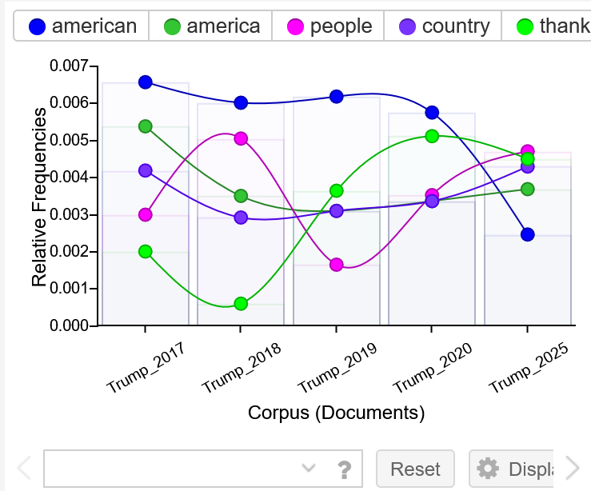
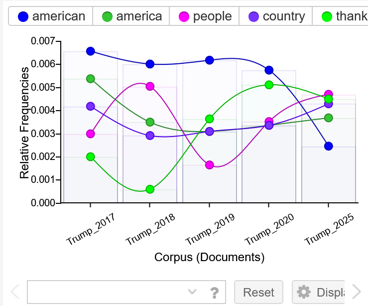

temp navigation before implementing dropdown
"We" the People
A comparative text analysis of Trump's 2017-2020 State of the Union and Trump's 2025 address to a joint session of congress.
I chose to compare Trump's earlier State of the Union speeches with his 2025 address to a joint session of congress in hopes that some magical pattern would appear that demonstrates where it all went so wrong. However, no magic pattern appeared. Instead, I am only more irritated.
Overview w/ Voyant: Combined Texts
 

Overview w/ AntConc: N-Gram 3


Looking at these two lists--and past the oddly-abundant "thank you"--you can see "we" statements taking up the fifth spot in each. I decided to dig further into this. What does Trump think "we" should do? Why does he use "we" so much? Has his use of "we" changed much from one source to the other?
Tertiary


And it was at this point I thought I'd be interesting to compare his "we" statements between the sources, as well as with his real life actions following these statements. Perhaps I can amass a larger corpus of Trump? I could then answer questions that reach further into the character of Trump's vocabulary and genuine word usage.
Current direction:
I am in the process of obtaining/scraping/learning how to scrape Trump's speeches from the internet so that I have a larger data pool to look from. I would like to focus in on either specific types of speeches, analysis of his speech overall, or I will gather records on other past presidents for comparison.